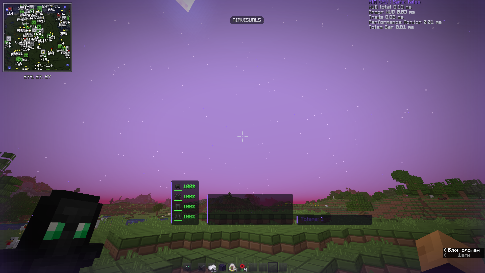

Установи мод
Minecraft 1.21.11, Java 21, Fabric Loader и Fabric API. Загрузка будет доступна после запуска оплаты.
Атмосфера мира, детали интерфейса и эффекты, которые хочется настроить под себя. Всё в одном RIMVISUALS.
81 модуль · собственный HUD · платный доступПопробуй акценты, оформление мира и расположение панелей. Перетащи HUD прямо в окне предпросмотра.

ПЕРЕТАСКИВАЙ ПАНЕЛИ ↔Это предпросмотр на сайте. Настройки установленного мода меняются в игре через Right Shift.
Мир, эффекты и интерфейс — под твоим контролем. Выбирай нужные модули и сохраняй любимые сочетания.
Настоящие игровые снимки RIMVISUALS. Выбери раздел и открой изображение в полном размере.
Скачивание временно закрыто. Доступ к загрузке откроется после запуска оплаты.
Открыть личный кабинет ↗Minecraft 1.21.11, Java 21, Fabric Loader и Fabric API. Загрузка будет доступна после запуска оплаты.
Получи код в моде и открой аккаунт. Вход доступен через Google или email.
Подключи свой код и вернись в игру. Меню настроек открывается клавишей Right Shift.
Нажми Right Shift в игре. В меню можно включать модули, менять их параметры, редактировать HUD и сохранять CFG-профили.
Для работы RIMVISUALS нужен твой аккаунт. Получи код в моде и подключи его на сайте. Вход в аккаунт не заменяет покупку. Скачивание временно закрыто до запуска оплаты.
Открой личный кабинет и раздел «Устройства и сеансы». Новый вход заменяет предыдущий сеанс мода.
Для проверки сеанса требуется интернет. После истечения короткого срока проверки функции RIMVISUALS блокируются, а обычный Minecraft остаётся доступен.
Текущая сборка рассчитана на Minecraft Java 1.21.11, Java 21, Fabric Loader 0.19.3 и Fabric API 0.141.6+1.21.11.